测试时间 2026-10-16 16:00（最新一轮）· 单元 59 + 功能 188 + 集成 24 全部通过 · 数据已重新灌入云数据库（应用内可直接查看）
本轮按「单元 → 功能 → 集成」三层完整测了一遍，并配合清空 MOCK 数据 → 空库验证 → 重新灌数的完整周期：单元 59 项、端到端功能 188 项、云环境集成 24 项，外加 SQL 交叉验证，全部通过：
DEFAULT_INITIAL_STOCK，用例 T11.1 / T11.2）；②统计报表新增毛利率 —— 顶部统计卡「毛利率」、明细表新增「毛利率」列（无销售的周期显示「—」）、商品销售排行每行带出该商品毛利率，口径统一为 估算毛利 ÷ 销售额（用例 T12.1–T12.6，单元 U9.1–U9.6）。注：测试中对「订单 MOCK-TK-WRITE」的出库/补货，以及发货记录、退货等写操作只写在测试的内存副本里，未写入云数据库，应用内数据不受影响。
| 步骤 | 操作 | 结果 |
|---|---|---|
| 1 · 清空 MOCK | 删除 20 款 MK% 商品及其 187 条流水、45 条 MOCK-% 订单成本 | 真实数据完好：8 款 SP 商品 / 33 条流水 / 2 条发货记录，库存逐款核算全部一致 |
| 2 · 空库轮测试 | 单元 53 项（当轮）+ 集成 24 项 + 真实数据 SQL 一致性 | 全部通过（未登录 RLS 拦截也在这一轮验证） |
| 3 · 重新灌数 | 按 fixtures 重新插入 20 款商品 / 187 条流水 / 45 条成本（tests/seed/ 留档，可复现） | 灌后全库：商品 28 / 流水 220 / 成本 45 / 发货记录 2 |
| 4 · 全量回归 | 端到端功能 188 项 + SQL 交叉验证 | 全部通过，0 异常 |
想再清一次 MOCK 数据时按此执行（先删流水再删商品）：DELETE FROM stock_moves WHERE order_no LIKE 'MOCK-%' OR product_id IN (SELECT id FROM products WHERE code LIKE 'MK%'); DELETE FROM order_costs WHERE order_no LIKE 'MOCK-%'; DELETE FROM order_shipments WHERE order_no LIKE 'MOCK-%'; DELETE FROM products WHERE code LIKE 'MK%';
| 项目 | 数量 | 说明 |
|---|---|---|
| 测试商品 | 20 | 编码 MK20261014001 ~ 020、名称带「【测试】」前缀，覆盖 5 个虚构品牌 + 无品牌款；进价为人民币、售价为美元 |
| 出入库流水 | 206 | 入库 51 笔 / 出库 155 笔，时间跨 2025-11-07 ~ 2026-10-14 |
| 订单 | 70 | 订单号 MOCK-TK日期+序号，另含 32 笔无订单号的散单出库（历史遗留） |
| 订单其他成本 | 45 | 运费 / 平台佣金 / 包装耗材等说明 |
| 购买者信息 | 126 笔 | 美国站风格买家（英文姓名 + 美国地址 + 电话），部分留空 |
| 品牌 | 商品数 | 库存合计 |
|---|---|---|
| MoonBerry | 3 | 82 |
| Yuki Studio | 2 | 54 |
| 未标注品牌 | 2 | 77 |
| 嘟嘟贴纸屋 | 4 | 97 |
| 拾光集 SHIGUANGJI | 1 | 7 |
| 星尘手帐 | 4 | 123 |
| 星星糖文创 | 1 | 11 |
| 朝柚 | 1 | 8 |
| 纸间集 | 5 | 83 |
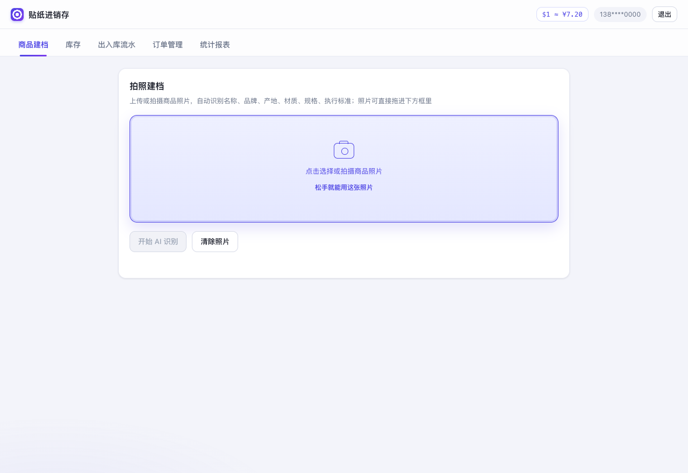
商品建档新增照片拖拽上传：照片悬停在上传框上时，边框变实线、底色加深、相机图标浮起，提示语切换为「松手就能用这张照片」。
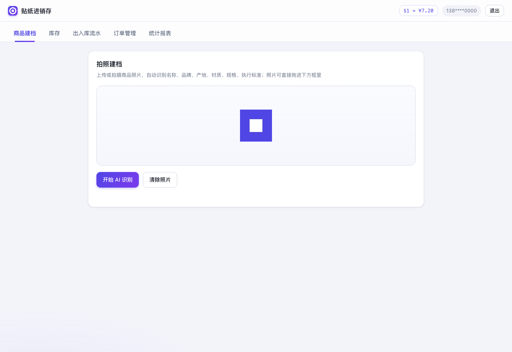
松手后照片直接进预览框并自动压缩到 1024px，「开始 AI 识别」立即可点；拖入非图片（如 txt）会被拦下且不污染原预览，一次拖多张只取第一张。
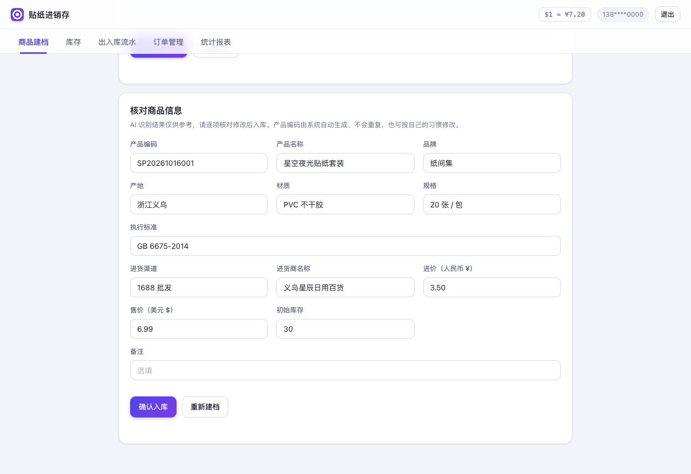
建档核对卡片新增「进货渠道」「进货商名称」两个选填字段：紧挨执行标准与进价排布，输入时从已录入商品自动补全候选（和品牌一样，避免同一家写出多个名字）；建档成功后随其他字段一并清空、写库到 purchase_channel / supplier_name 两列。
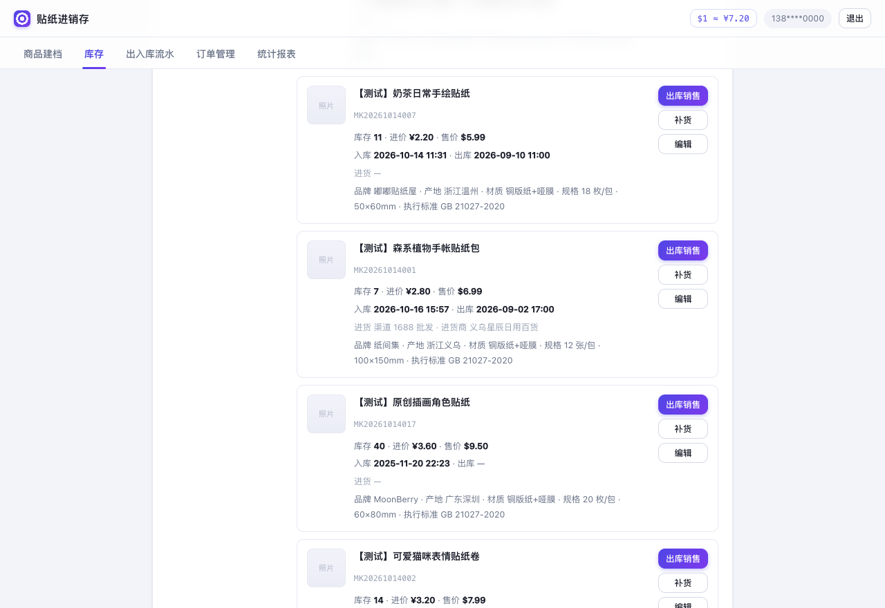
库存页商品卡片新增「进货」行：显示渠道与进货商，未登记时显示「—」；编辑弹窗同样支持修改这两个字段（图中为 MOCK 数据，仅用于展示）。
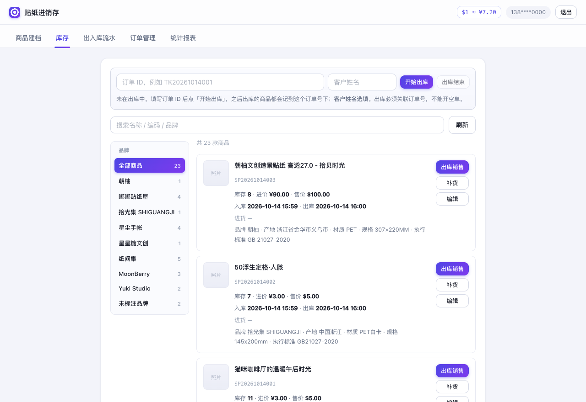
库存页：23 款商品（含原有 3 款真实商品），左侧品牌栏自动聚合 9 个品牌 + 未标注品牌，缺货 / 低库存标签正确；只有缺货商品的「补货」按钮为蓝色高亮，正常商品的补货按钮为普通白底样式。
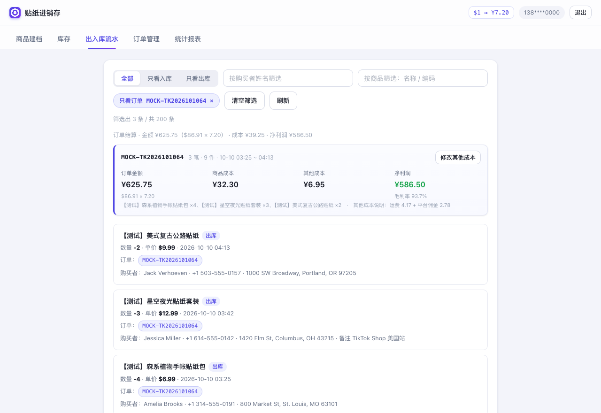
流水页「只看某个订单」：点某个订单号标签（或从订单管理页点「在流水页查看」）即可只看该单流水，筛选条件以可取消的标签呈现；上方自动结算出订单金额 ¥625.75（$86.91 × 7.20）、商品成本 ¥32.30、其他成本 ¥6.95、净利润 ¥586.50（毛利率 93.7%）。
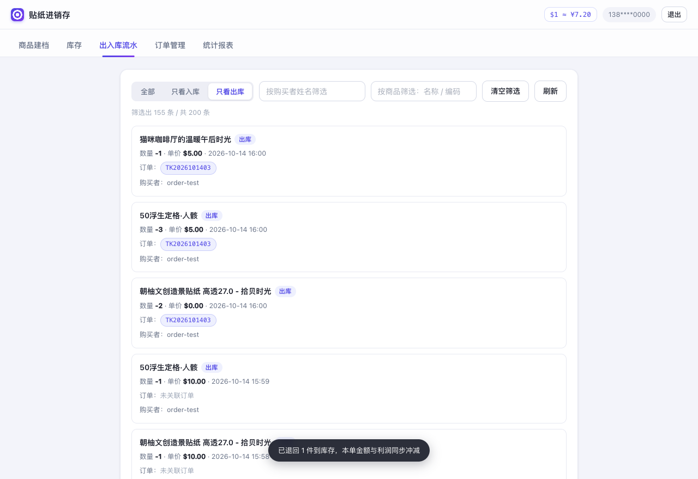
流水页新增「全部 / 只看入库 / 只看出库」分段筛选：选中「只看出库」后 200 条窗口里筛出 155 条出库记录，可和订单标签、购买者姓名、商品名筛选叠加使用。
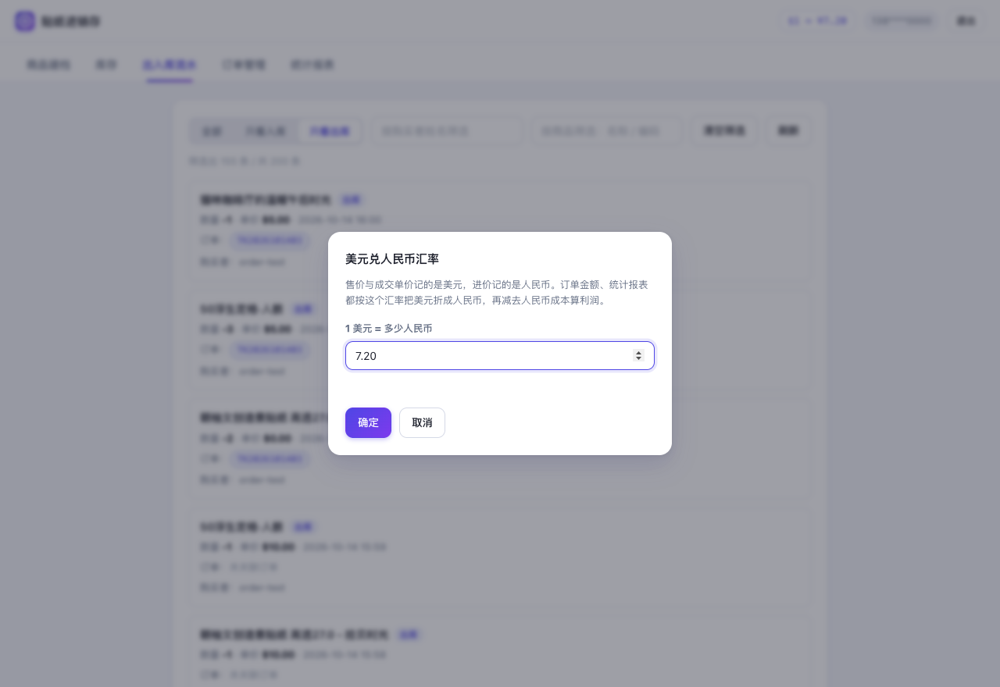
右上角常驻「$1 ≈ ¥7.20」汇率按钮：售价与成交单价记的是美元，点开可修改汇率，订单金额、统计报表随即按新汇率重算；汇率存在云端 app_settings 表里，换设备也一致。
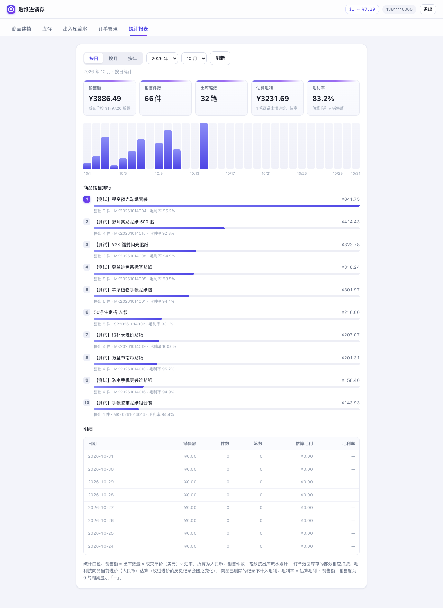
统计报表按日（2026 年 10 月）：销售额 ¥3886.49 / 66 件 / 32 笔 / 估算毛利 ¥3231.69 / 毛利率 83.2%，柱状图 31 天完整渲染，明细表每行给出该周期毛利率（如 10-14 当天 34.1%，无销售的日期显示「—」），销售排行第一名【测试】星空夜光贴纸套装 ¥841.75 并带出该商品毛利率（已扣减退货）。
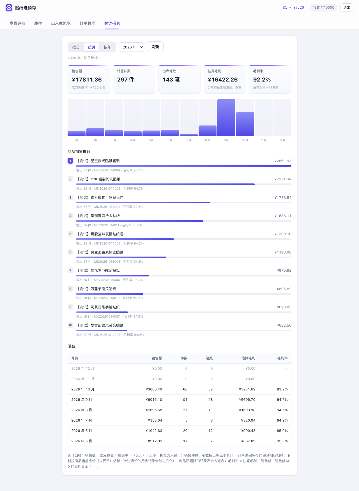
统计报表按月（2026 年）：全年销售额 ¥17811.36 / 297 件 / 143 笔 / 估算毛利 ¥16422.26 / 毛利率 92.2%。
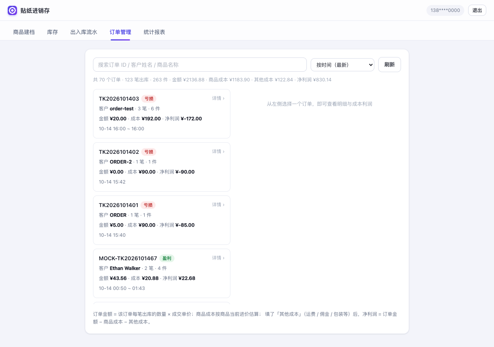
订单管理页：左侧按时间列出全部订单（盈利绿标 / 亏损红标），顶部一行汇总订单数、笔数、件数、金额、商品成本、其他成本与净利润。
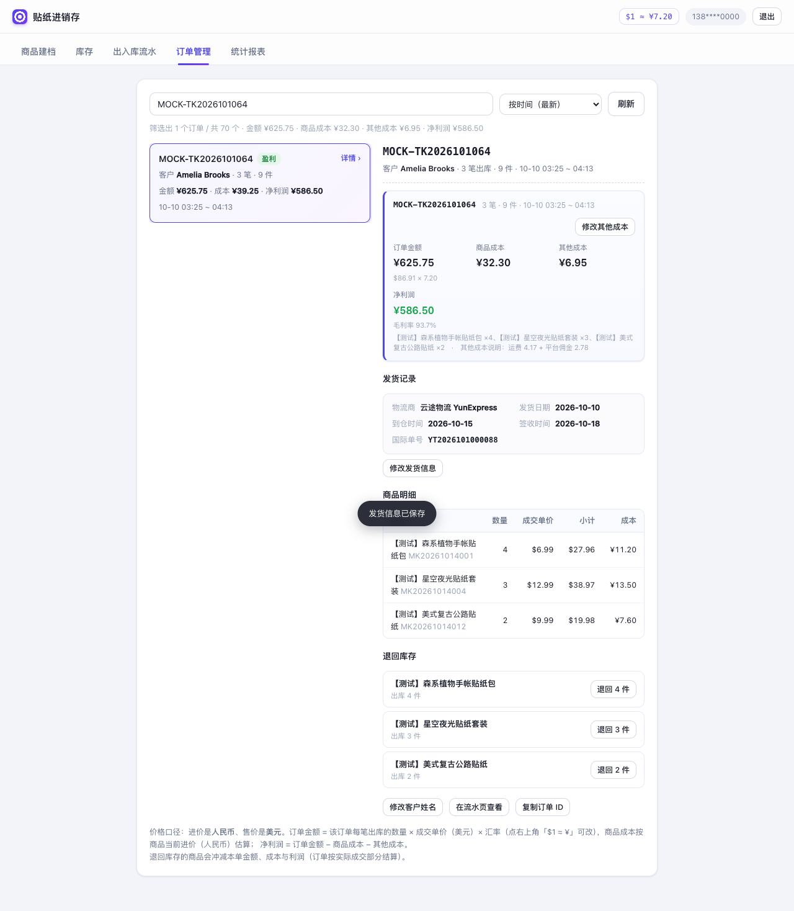
订单详情新增发货记录：一个订单一条，可录物流商、发货日期、到仓时间、签收时间、国际单号，随时修改；结算卡上的订单金额下方直接标注「$86.91 × 7.20」的换算过程，客户姓名选填、未填时显示「未填写」。
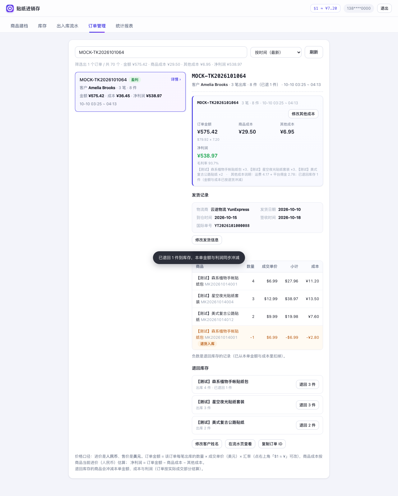
订单详情新增退回库存（摊销）：按商品给出可退数量，退货 1 件后本单金额从 ¥625.75 冲减到 ¥575.42、商品成本 ¥32.30 → ¥29.50、净利润同步降到 ¥538.97；明细里出现一条高亮的负数「退货入库」行，商品库存同时加回。
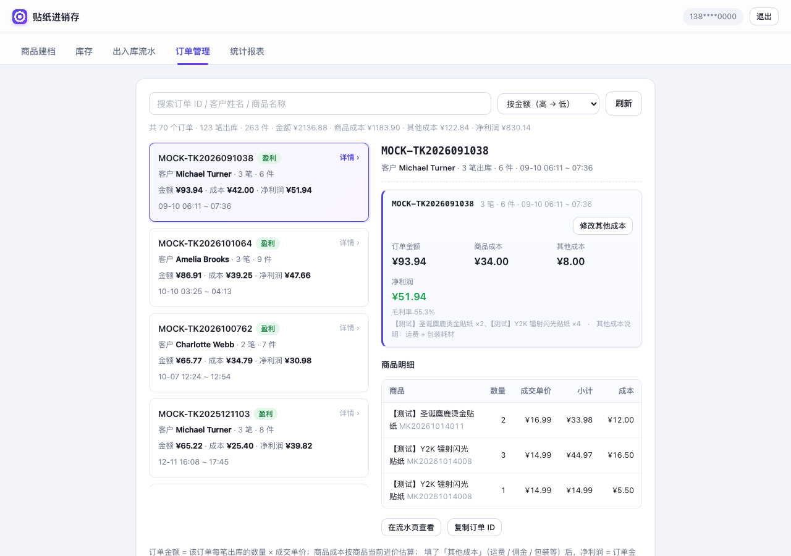
订单详情的其他能力：金额 / 商品成本 / 其他成本 / 净利润与毛利率结算卡 + 逐笔商品明细（数量、成交单价美元、小计、成本），可直接改其他成本、修改客户姓名、一键跳流水页。
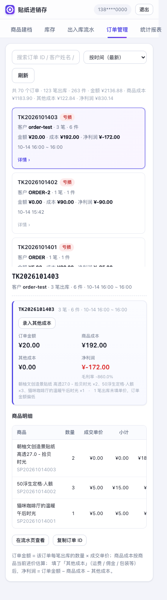
窄屏（414px）下订单管理自动上下堆叠，列表与详情都能正常使用。
| 校验项 | 数据库计算 | 页面显示 | 结果 |
|---|---|---|---|
| 商品总数 | 23 | 23 | 一致 |
| 流水总数（列表窗口 200 条） | 200 | 200 | 一致 |
| 库存 = 入库 − 出库（20 款逐款核算） | 0 款不一致 | — | 一致 |
| 订单 MOCK-TK2026101064 金额 / 成本 / 净利 | ¥625.75 / ¥32.30 / ¥586.50 | ¥625.75 / ¥32.30 / ¥586.50 | 一致 |
| 退回 1 件后 1064 金额 / 成本（内存验证） | ¥575.42 / ¥29.50（= −$6.99 × 7.2） | ¥575.42 / ¥29.50 | 一致 |
| 2026-10 销售额 / 件数 / 笔数 / 毛利 / 毛利率 | ¥3886.49 / 66 / 32 / ¥3231.69 / 83.2% | 同左 | 一致 |
| 2026 全年销售额 / 件数 / 笔数 / 毛利 / 毛利率 | ¥17811.36 / 297 / 143 / ¥16422.26 / 92.2% | 同左 | 一致 |
| 2025 全年销售额 / 件数 / 笔数 / 毛利 / 毛利率 | ¥1451.02 / 28 / 12 / ¥1372.82 / 94.6% | 同左 | 一致 |
| 按年合计（2025+2026） | ¥19262.38 / 325 件 / 155 笔 | 同左 | 一致 |
| 单日毛利率（2026-10-14，明细表逐行） | ¥254.23 ÷ ¥745.63 = 34.1% | 34.1% | 一致 |
| 订单管理页合计（含测试内存写入 1 单） | 71 单 / 125 笔 / 金额 ¥15536.52 / 净利 ¥14221.38 | 同左 | 一致 |
| 金额最高订单 MOCK-TK2026091038 | ¥676.37 / 成本 ¥34.00 / 净利 ¥634.37 | 同左 | 一致 |
| 订单 MOCK-TK2026091946 明细（1 笔 / 4 件） | $59.96 × 7.2 = ¥431.71 − ¥22.00 − ¥3.00 = ¥406.71 | 同左 | 一致 |
换算口径：成交单价 / 售价按美元记录，金额 = 数量 × 单价 × 汇率（当前 7.2）；商品成本按人民币进价直接累计；退货按最后一笔出库单价从订单金额与成本中扣减。
所有测试数据都带统一标记，想清掉时随时说一声即可，按下面顺序执行：
DELETE FROM stock_moves WHERE product_id IN (SELECT id FROM products WHERE code LIKE 'MK%'); DELETE FROM stock_moves WHERE order_no LIKE 'MOCK-%'; DELETE FROM order_costs WHERE order_no LIKE 'MOCK-%'; DELETE FROM order_shipments WHERE order_no LIKE 'MOCK-%'; DELETE FROM products WHERE code LIKE 'MK%';
原有 3 款真实商品（猫咪咖啡厅 / 50浮生定格 / 朝柚文创造景贴纸）与它们的流水未被改动；app_settings 里只存汇率一条全局设置，不在清理范围。
tests/unit_tests.js — 单元测试（59 项，函数级，秒级跑完）tests/run_tests.js — 功能测试（188 项端到端，Playwright + 无头 Chrome，可重复执行）tests/cloud_tests.js — 集成测试（24 项，真实云端，不打 mock）tests/seed/ — MOCK 数据回灌 SQL（20 商品 / 187 流水 / 45 成本，可复现）tests/expected.json — 数据库 SQL 算出的期望值（含汇率 7.2 与退货口径）tests/gen_expected.py — 期望值计算脚本（独立复刻页面聚合逻辑，用于交叉验证）tests/gen_mock.py — MOCK 数据生成器（固定随机种子，可复现）tests/gen_report.py — 本报告的生成脚本tests/shots/ — 全部界面截图